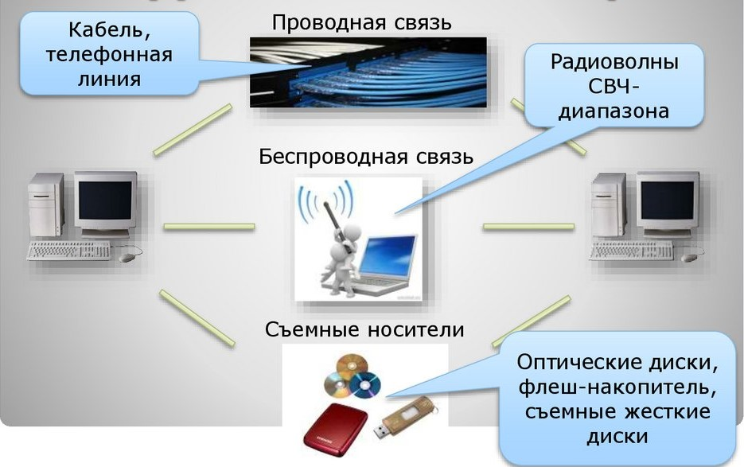

3. Методы передачи информации
Существует несколько основных методов передачи информации, среди которых выделяют:(рис1)
Визуальные методы:
- Графики и диаграммы: визуализация данных для более легкого восприятия информации, что помогает лучше понять закономерности и связи.
- Слайды и презентации: использование программ для представления информации, таких как PowerPoint, для структурированного и наглядного изложения материала.
Аудиовизуальные методы:
- Видеоматериалы: использование видео для демонстрации или обучения, что может значительно повысить интерес и вовлечённость аудитории.
- Аудиозаписи: подкасты или аудиокниги для передачи информации, что позволяет передавать знания в удобном формате и при различных обстоятельствах.
Цифровые методы:
- Электронная почта: обмен письмами через интернет, которая остаётся одним из самых популярных способов делового общения.
- Социальные сети и мессенджеры: быстрота и удобство обмена сообщениями, что позволяет поддерживать связи в реальном времени.
- Вебинары и онлайн-курсы: обучение и взаимодействие в режиме реального времени через интернет, способствующие обмену знаниями на международном уровне.
 (рис1)